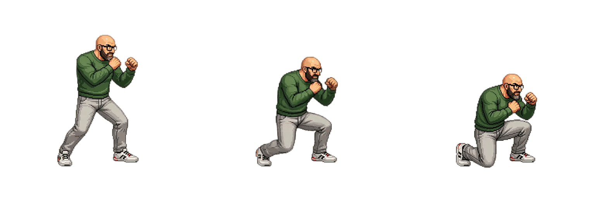
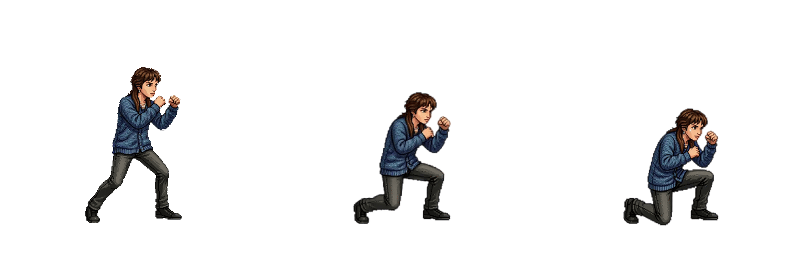
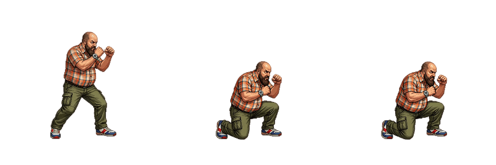
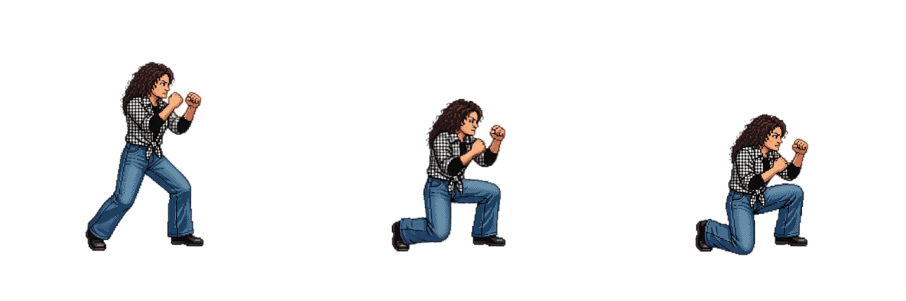
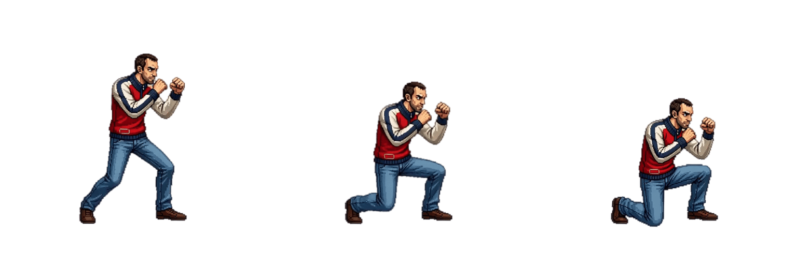
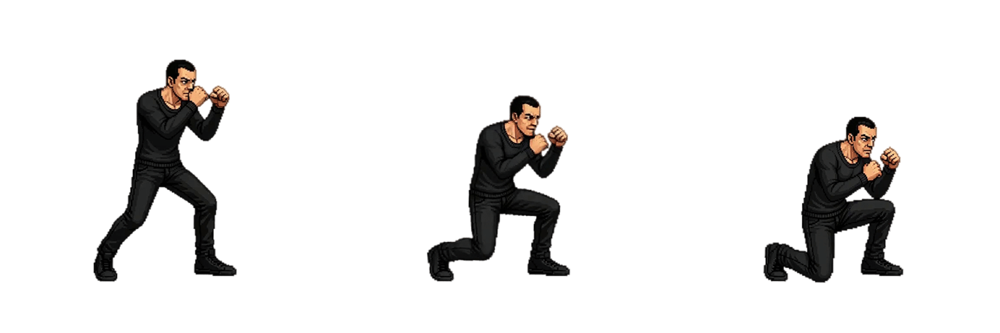
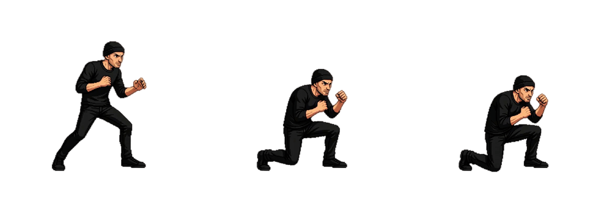
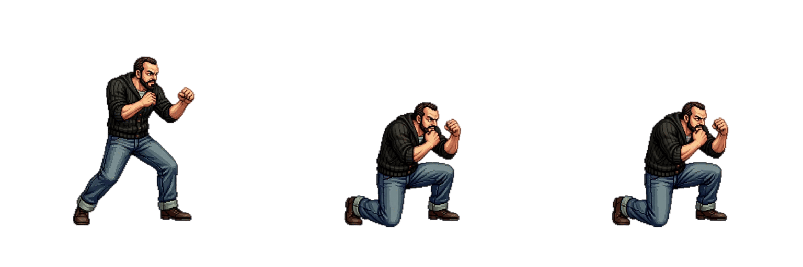
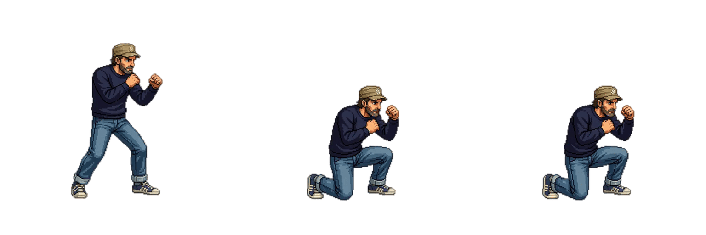

Timing Crouch
Aggiornamento: 2026-11-19. Integrati 9 personaggi. Ogni sequenza dura 250 ms (0,25 s) a velocita 1x, con durata uniforme per fotogramma. I diversi FPS compensano il numero di frame di ciascuno spritesheet.
Riproduzione solo avanti dalla guardia alla posa accovacciata. Disattivando il loop, il player si ferma sulla posa finale. Le tre immagini mostrano inizio, meta e fine della sequenza. Il loop rimane attivo per default nella demo.
Celle 512x512, scala e padding conservati. Versioni salvate accorciate e intervalli di fotogrammi selezionati su AutoSprite, senza inferire offset nello spritesheet completo da 49 frame.
Scarica CSV. In Godot questa sequenza rappresenta la discesa; la posa finale puo essere mantenuta nello stato crouch.
| Personaggio | Inizio / meta / fine | Frame esportati / sorgente | FPS | Durata frame | Durata totale | Provenienza |
|---|---|---|---|---|---|---|
| ALBERTO |  | 9 / 34 | 36 | 27.778 ms | 250 ms | Atlascmwniaswy002vy937roq1n6us |
| Elisa |  | 9 / 34 | 36 | 27.778 ms | 250 ms | Atlascmwnj42rc009046d96c39vpm0 |
| FABIO-CLARA |  | 9 / 44 | 36 | 27.778 ms | 250 ms | Atlascmwnj5n7d006pakhziz67284r |
| FRA-TAVARONE |  | 9 / 32 | 36 | 27.778 ms | 250 ms | Atlascmwnj768l0096rqaosaci0hqj |
| MARSAN |  | 11 / 38 | 44 | 22.727 ms | 250 ms | Atlascmwnj8qx1009xakhzw2l7ddrf |
| Oscar |  | 10 / 10 | 40 | 25.000 ms | 250 ms | Atlascmwni0ezd0013ygz03068uc37 |
| PEPPO |  | 10 / 39 | 40 | 25.000 ms | 250 ms | Atlascmwnja59i00dg46d96fo50zd6 |
| PIPPO |  | 10 / 40 | 40 | 25.000 ms | 250 ms | Atlascmwnjbr1z00bdakhzsdmfcix7 |
| SBOZ |  | 10 / 39 | 40 | 25.000 ms | 250 ms | Atlascmwnjd8ti00djakhzsig6vg0u |